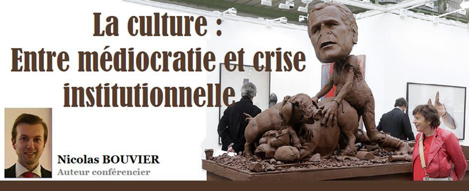
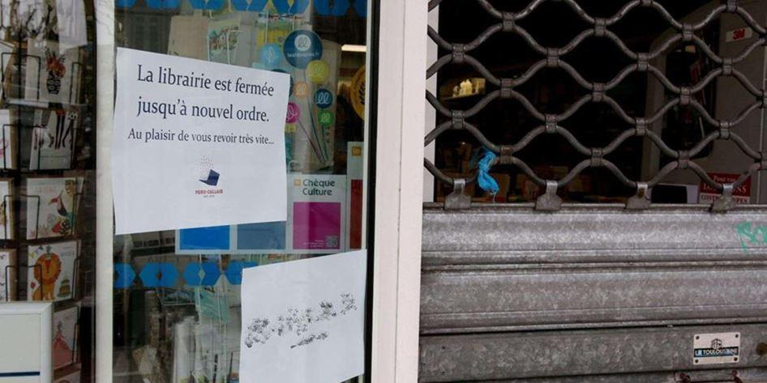
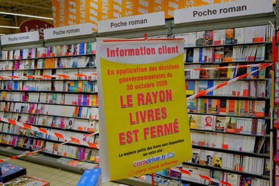
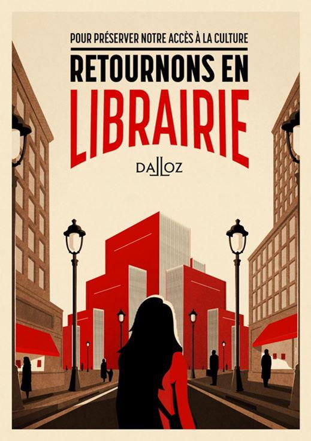

La culture : Entre médiocratie et crise institutionnelle
par Nicolas BOUVIER

« Tout ce qui dégrade la culture raccourcit les chemins vers la servitude »
Albert Camus
L’auteur de « L’étranger » n’a jamais été aussi actuel par cette phrase qui résume parfaitement ce que la culture subit, vit et traverse dans ce marasme qu’est devenu notre époque.
Avant la crise sanitaire, qui est désormais devenue une crise politico-économico-institutionnelle, la culture subissait déjà les affres d’un système qui tentait de survivre face à la mondialisation, les lobbys et les multinationales, entre les géants du web et de la grande distribution.
Dans l’Histoire de la Ve République, chaque gouvernement, à travers chaque Chef d’État, a tenté de laisser une empreinte dans le monde de la culture, que ce soit à travers l’érection de monuments, de bibliothèques, de politiques culturelles ou de musées ouverts sur le monde et sur l’Humanité.
Parallèlement à ces évolutions à travers les âges, nous vivions déjà un paradoxe.
Un niveau éducatif, culturel qui s’enfonçait dans le médiocre, une culture générale qui se réduisait comme peau de chagrin, la télévision ayant été l’un des supports ayant entraîné cette chute phénoménale, notamment à travers la téléréalité et les divertissements qui ne nivelaient plus les citoyens vers le haut.
Michel Desmurget, auteur de « La fabrique du crétin digital », nous dit avec un côté visionnaire assez effrayant que la nouvelle génération a un QI plus bas que la dernière génération du XXe siècle, autrement dit la mienne (années 90).
Une première dans l’Histoire de l’Humanité.
Le numérique, le digital, les heures passées devant les écrans de toutes formes et de toutes tailles, du smartphone à la télévision, en passant par les écrans d’ordinateurs et de smartphones.
Les jeunes passent plus de temps devant les écrans que devant leur professeur en classe, voilà un des constats du livre de Michel Desmurget.
Il paraît si loin, le temps de Marcel Pagnol, où l’excellence, la méritocratie et le niveau culturel étaient l’apanage de la réussite et de l’émancipation de la société.
À croire que la promotion de la médiocrité est devenue l’ambition du « nouveau monde » !
En philosophie, le terme de « culture » désigne ce qui est différent de la nature.
En sociologie, comme en éthologie, la culture est définie comme « ce qui est commun à un groupe d’individus », « ce qui soude », c’est-à-dire ce qui est appris, transmis, produit et inventé. Ainsi, pour l’UNESCO, « la culture est l’ensemble des traits distinctifs, spirituels, matériels, intellectuels et affectifs, qui caractérisent une société ou un groupe social.
Elle englobe, outre les arts, les lettres et les sciences, les modes de vie, les lois, les systèmes de valeurs, les traditions et les croyances ». Il se constitue en de multiples manières par l’action d’être, de penser, d’agir et de communiquer en société.
En mars 2020, la culture a été stoppée dans son intégralité, pour la première fois dans l’Histoire de l’Humanité. Jamais, même en temps de guerre, les lieux culturels ont été fermés.
Pour ma part, je me souviens de mon dernier salon du livre, près de Cherbourg, les 7 et 8 mars 2020. À l’époque, le Covid inquiétait légèrement la population, mais le Chef de l’État faisait la promotion des sorties au théâtre.
Une semaine plus tard, tout était bouclé à double tour pendant deux mois.
Un basculement sans précédent, provoquant par la suite, des milliers de fermetures de librairies, de théâtres, de musées, mais aussi la faillite de nombreuses structures culturelles, mais aussi la création (plus marginale) de nouvelles aventures culturelles.
Le « distanciel » et le « présentiel » (novlangue de « à distance » et « sur place) a supplanté le lien social et le contact humain, créant de multiples paradoxes et oxymores, nouveaux paradigmes de la société du XXIe siècle.
On applique une « distanciation sociale » avec des « gestes barrières », en étant masqué.
On ne se touche plus. C’est à peine si on se parle, si on communique.
La culture est devenue « non essentielle ».
C’est peut-être la plus grande discrimination à grande échelle que notre monde ait connue.
De ce fait, il est devenu normal de considérer que des gens étaient essentiels et d’autres non. La crise sanitaire a alors mis en lumière une crise politique majeure, prolongeant celle des gilets jaunes qui avait déjà été importante.
Seuls les métiers concernant le consumérisme, l’aliénation et la « servitude » (volontaire ou non) ont été « essentiels » et imposés.
Au-delà même des soignants, forces de l’ordre et autres métiers indispensables au fonctionnement de la société, les métiers du bien-être, de la culture, des loisirs et de la gastronomie ont été marginalisés et méprisés. Les aides financières ne sont pas un cadeau, contrairement à ce que le système veut nous laisser croire. Nous payons TOUJOURS le prix d’aides que l’on reçoit, un jour ou l’autre.
Depuis environ dix-huit mois, la culture fait partie de ces secteurs qui peinent à affronter cette crise qui est tombée comme un couperet. Pourtant, cet aspect de notre vie est plus que jamais essentiel, à l’heure où le niveau général s’est effondré. La lecture revient peu à peu sur le devant de la scène, mais les artistes sont essentiels et indispensables à l’épanouissement de chacun.
La création artistique est une valeur fondamentale, autant que respirer, voir, boire et manger. L’esprit doit toujours être en mouvement, en activité.
Le paroxysme de cette crise a été la fermeture des librairies à l’hiver dernier, pendant que des millions de personnes s’entassaient dans le métro.
Un virus pouvait se transmettre par des livres, mais pas dans des gares.
Nous pensions avoir touché le fond, mais nous continuons de creuser.
Il est désormais indispensable de faire revivre pleinement la culture, mais il y a un hic.
Au-delà du virus, il y a une nouvelle idéologie : la discrimination positive.
Elle était connue concernant le monde de l’emploi, mais elle a innové concernant le pass sanitaire, nouvel apartheid sanitaire où, suivant que vous soyez ou non vacciné, vous aurez le « droit », la « liberté » d’accéder à tel ou tel événement sportif, culturel, etc.
L’accès à la culture doit se faire sans conditions.
Un passeport s’utilise pour changer de pays, pas pour changer de quartier, pour assister à un événement ou pour prouver qu’on est sain de corps et d’esprit.
Nous sommes donc entrés dans un nouveau paradigme où, suivant que vous soyez bienpensant ou complotiste, les jugements de cour vous accepteront ou vous marginaliseront.
« L’homme de culture doit être un inventeur d’âmes » Aimé Césaire.
Gageons alors que nous n’ayons perdu ni notre âme, ni notre esprit et que la culture soit l’outil qui permettre la révolution des idées et des Hommes.
Partager cette page